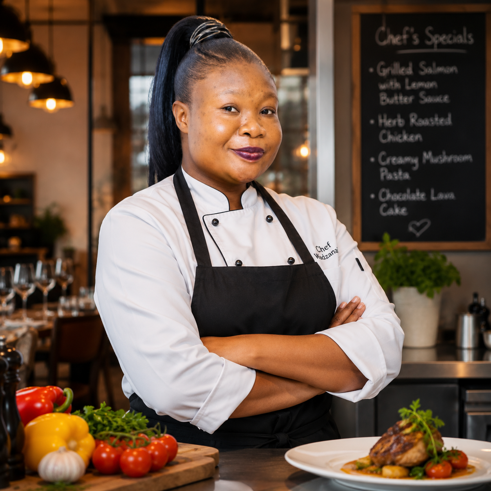
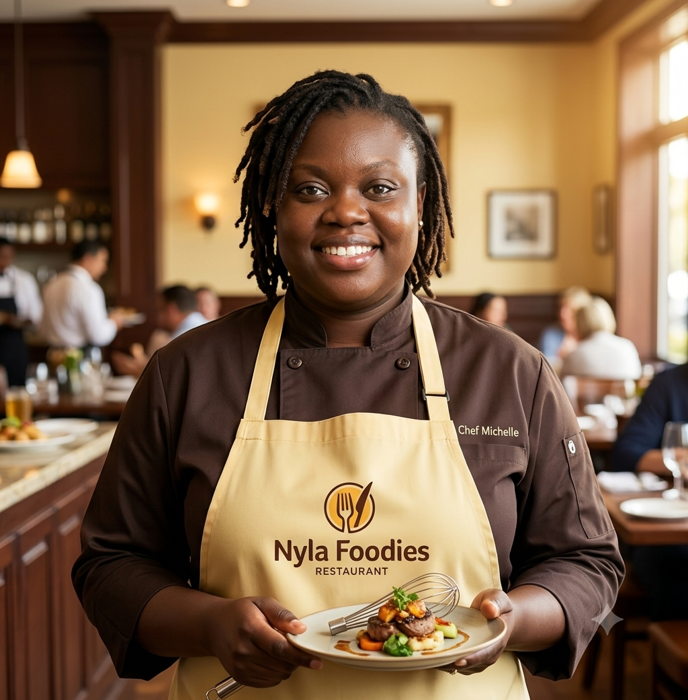
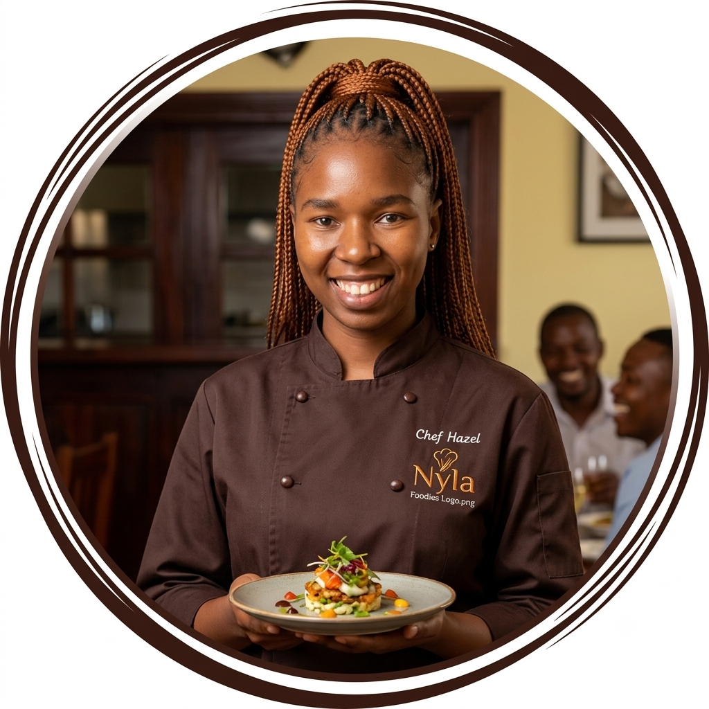
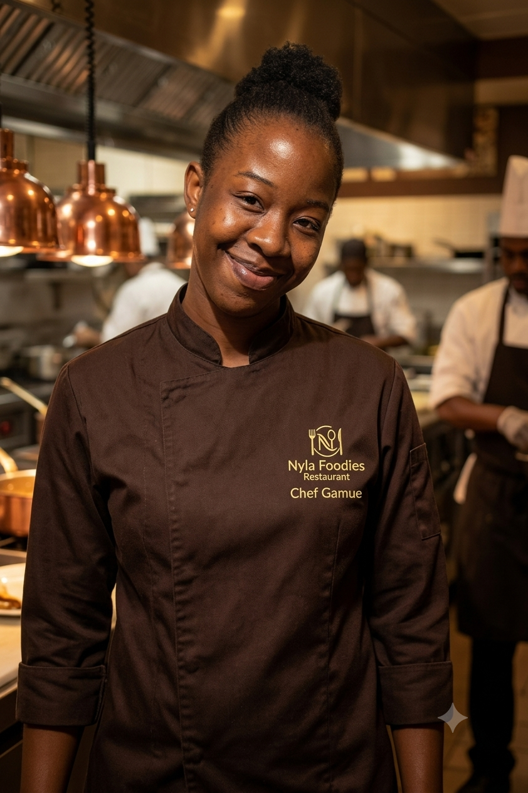
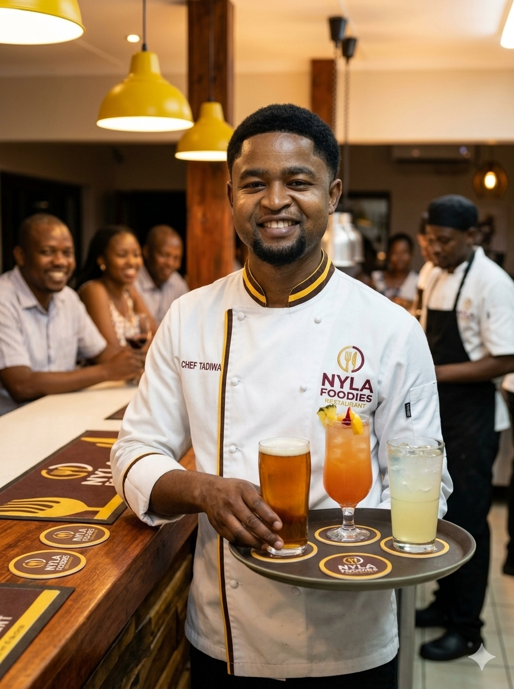

The founder of Nyla Foodies, Wadzanai grew up cooking alongside her grandmother in rural Mashonaland and brings those recipes straight to the pass.

Michelle keeps the front of house running smoothly and makes sure every guest — regular or first-timer — feels looked after.

Hazel oversees the daily stews and grills, with a particular pride in her maguru and beef stew.
Tinashe is often the first friendly face tourists meet, happily explaining the menu and recommending a dish to match any palate.

Gamuchirai handles the malva pudding and traditional sweet treats that close out every meal on a high note.

From maheu to Mazoe, Tadiwa keeps the drinks menu stocked with the traditional favourites guests keep coming back for.
We're always happy to hear from people who care about good, honest cooking. Reach out through our contact page if you'd like to join the Nyla Foodies family.
Get in Touch →